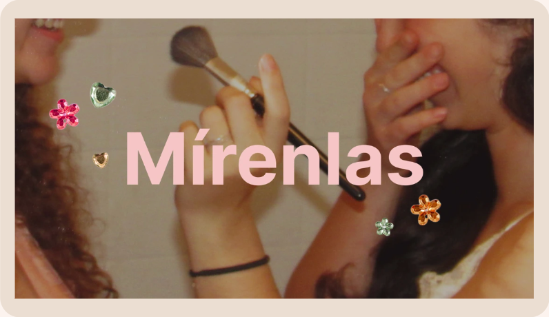
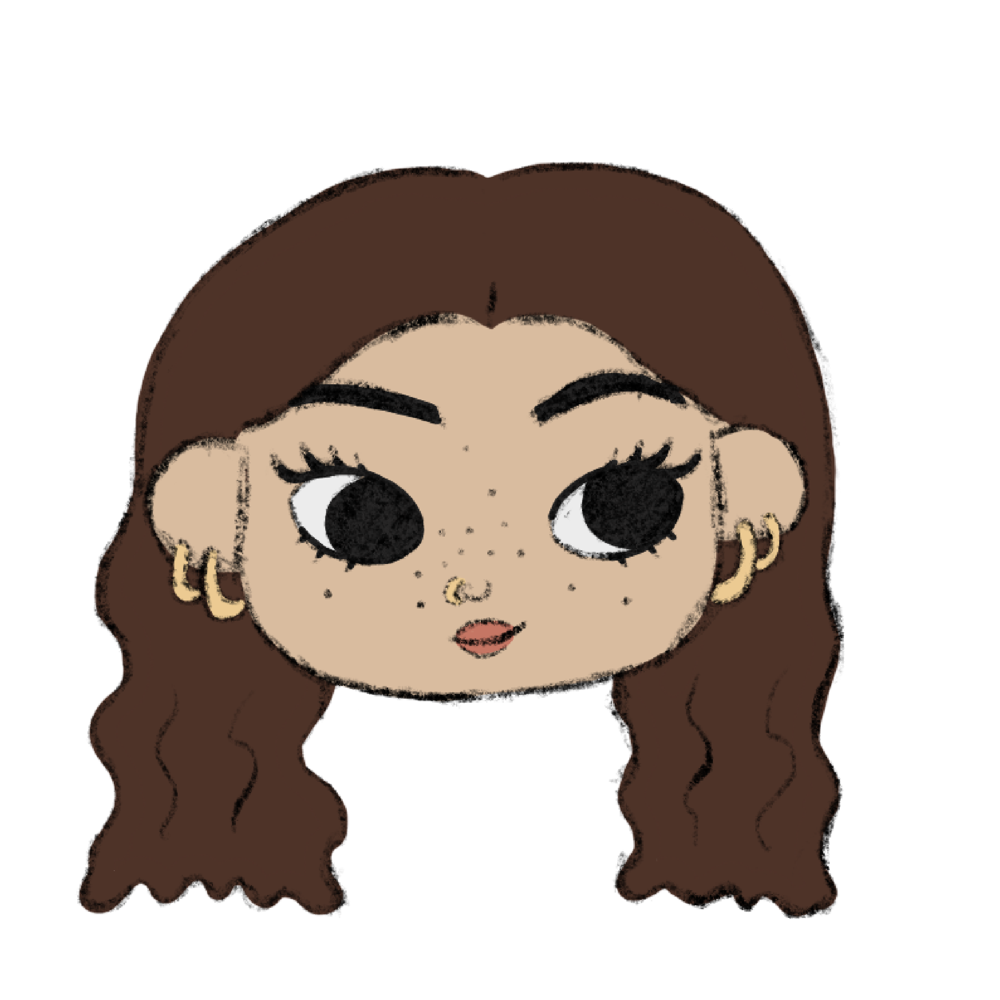
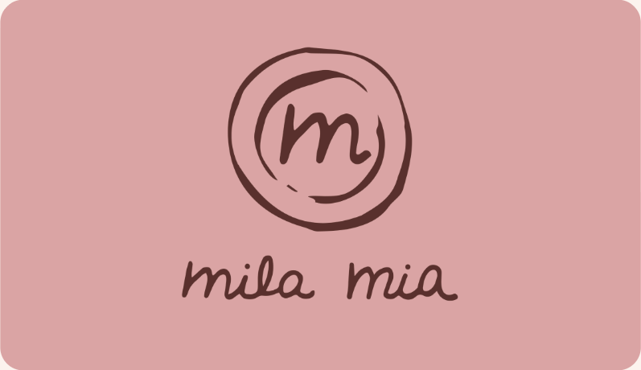
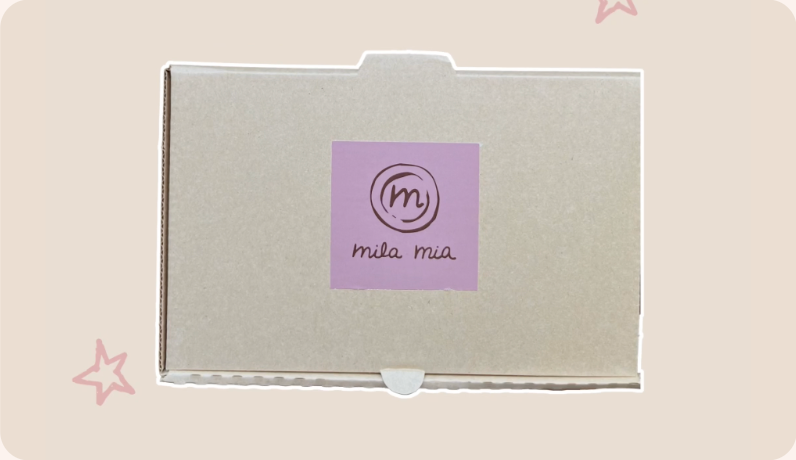
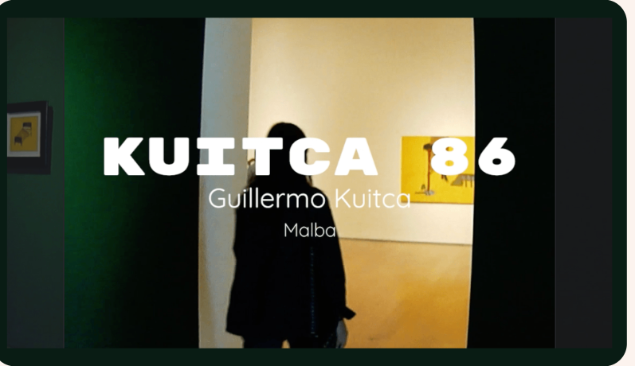

“Mírenlas”
Editorial - Photography

I'm Lola, a Multimedia Design student focused on art direction, branding and video editing. My work combines conceptual thinking, visual identity, and a strong attention to detail to create clear, engaging, and meaningful design.
Selected projects in editorial photography, branding, and video editing.

Editorial - Photography

Branding

Video editing

Video - Video Editing
Visual references, archive pieces, and aesthetic inspiration in continuous update.
Software and platforms I use daily for design, motion, and visual production.
I'm a Multimedia Design student focused on art direction, branding, user experience, and video editing. I'm interested in concept-driven design and visual storytelling, creating cohesive identities where every element has a clear intention. My work combines creativity, attention to detail, and a strong visual sensibility, always aiming to communicate ideas in a clear and engaging way.
I'm currently studying at Maimónides University, where I've been developing skills in visual communication, branding, user experience, and video editing. Throughout my studies, I've worked on projects that combine concept, identity, and storytelling, allowing me to explore different areas of design and strengthen my creative approach.